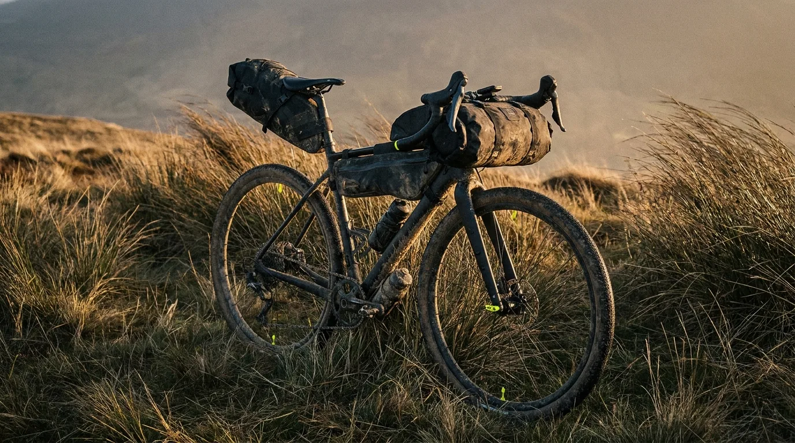
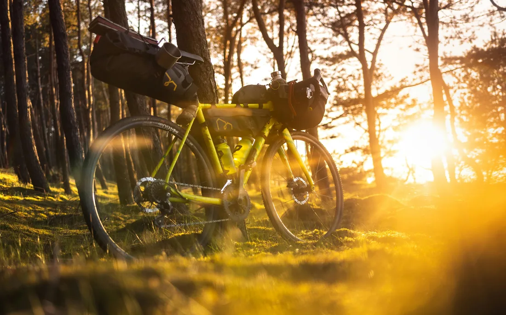
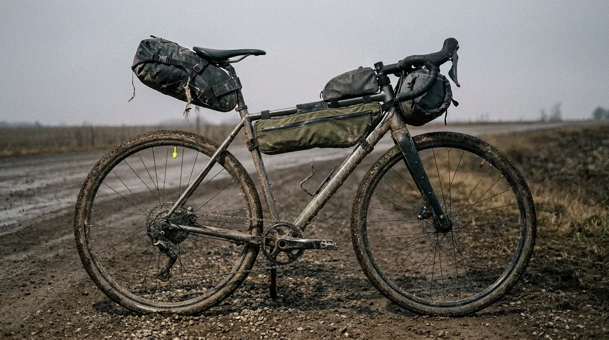
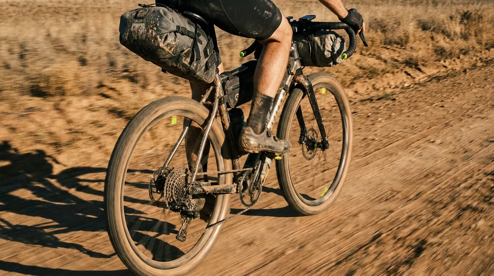
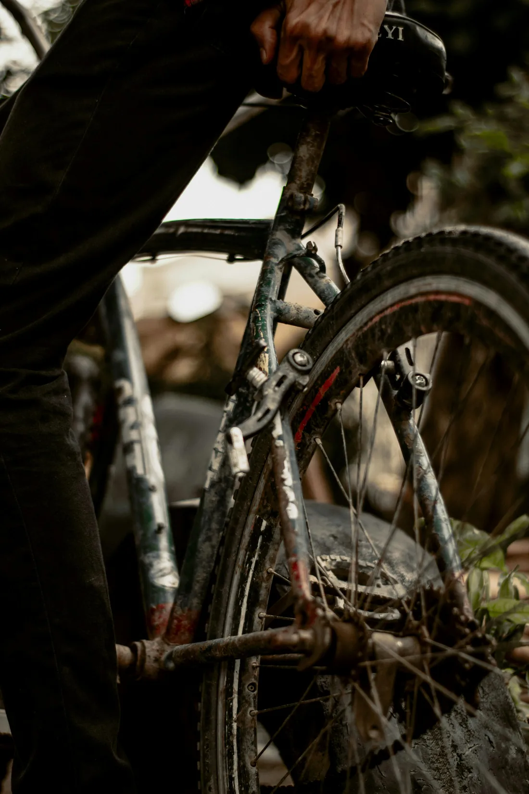
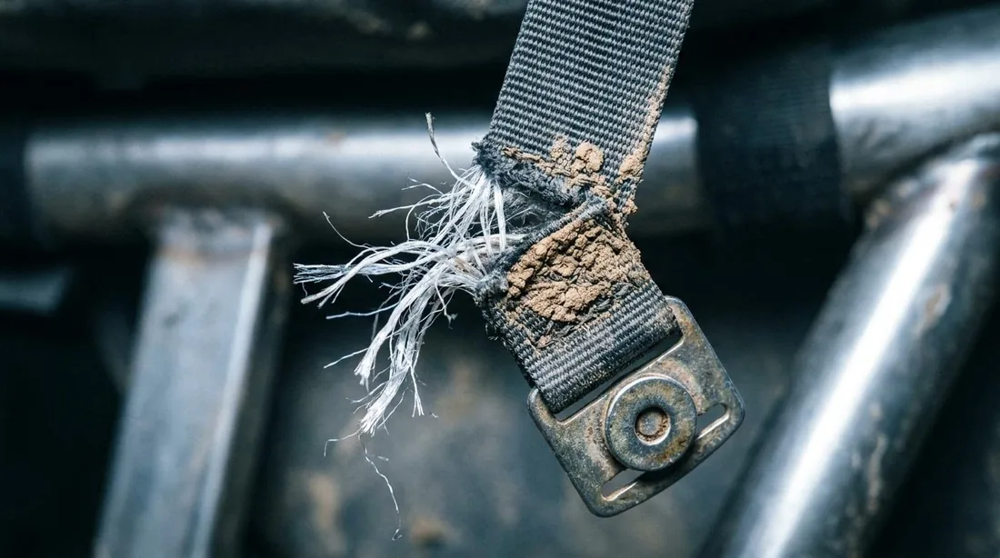
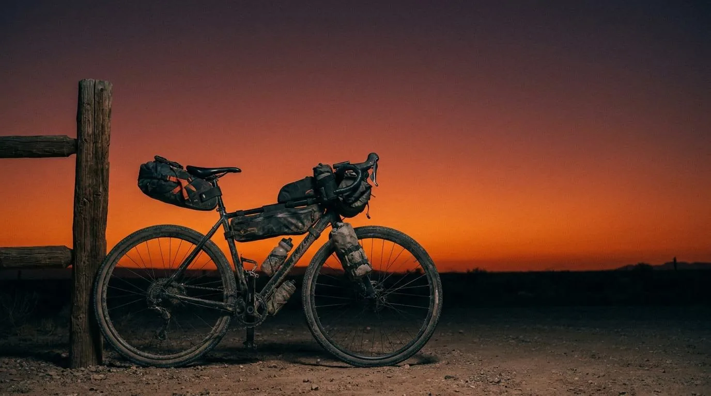

// Grit Scores: Apidura 9.5 / Revelate 9.0 / Tailfin 9.0 / Restrap 8.0 — scoring protocol
Verdict //
The best bikepacking bags for ultra-racing are the Apidura Racing Series. They are narrower, lighter, more aero, and more weather-resistant than anything else we tested. The catch: they're expensive and capacity is deliberately limited.
If you're racing Unbound XL, Atlas Mountain Race, or any event where seconds compound over days, Apidura is the answer. If you're touring, expedition-bikepacking, or value durability and load capacity over aerodynamics, Revelate Designs still owns that category. For a hybrid system that swaps faster than anything else on the market, Tailfin's AeroPack is in a class of its own. And if budget matters, Restrap punches well above its price.
Field Test //

We ran the same gravel bike across 1,500+ miles, swapping the full bag setup every 300–400 miles. Same loadout each round — sleeping system, food, water, tools, electronics, layers — measured by weight and volume to keep the comparison clean.
Conditions were brutal on purpose: prairie crosswinds, three multi-day rainstorms, an Unbound-style washboard sector, two cold-front nights below freezing, and one full mud day. We graded each system on six things: aerodynamics, stability under load, waterproofing, mounting speed, capacity, and how well it survived the abuse.
We're not paid by any of these brands. No affiliate links. The bags were bought, borrowed, or used out of pocket. If you want to see the bike we mounted them on, read our titanium vs carbon gravel bike comparison.
Raw Data //
| Brand | Weight (kg) | Capacity (L) | Price ($) |
|---|---|---|---|
| Apidura Racing | 1.10 | 22.5 | ~450 |
| Revelate Designs | 1.45 | 38.0 | ~420 |
| Tailfin AeroPack | 1.25 | 20.0 | ~500 |
| Restrap | 1.35 | 28.0 | ~320 |
The Loadout // Three-Bag Protocol

Modern bikepacking is built on three bags: a handlebar roll for compressible lightweight gear (sleeping bag, puffy, bivy), a frame bag for dense heavy items (tools, water bladders, stove), and a seat pack for medium-weight clothing and food.
Capacity scales by frame size. A medium gravel frame typically yields 25–35 liters total across all three. Ultra-racers strip down to 18–22 liters; expedition riders push 40+. Get this weight distribution wrong and the bike handles like a shopping cart with a bent wheel. Get it right and a fully loaded rig still flicks through technical sectors. For a full setup walkthrough, see our Bikepacking 101 protocol.
01 // Aero-Efficiency
Edge: Apidura Racing Series.
"Aero bikepacking bag" sounds like marketing nonsense. It isn't. At ultra pace in crosswinds, the wide barrel-shaped handlebar rolls catch wind like sails. Apidura's racing-spec roll is narrower, tapers toward the ends, and sits flat against the bars. Over 1,500 miles, the perceived effort difference in crosswind sectors was substantial — and measurable on our power data.
Tailfin's AeroPack seat system wins on rear-end aero — the rigid arm holds the bag locked in position and doesn't sway, which means it doesn't disturb airflow behind the rider. Revelate's seat packs are the worst aerodynamically: wide barrel cross-section, side compression straps that catch wind, and a tendency to swing at speed. Restrap sits in the middle.
02 // Stability Under Load

Edge: Tailfin AeroPack (rear). Apidura (front).
A heavy seat pack swinging side-to-side at the end of a long day will gut your descending confidence faster than anything else on the bike. Tailfin solved this with a carbon arch that anchors the pack rigidly to the rear axle. It does not move. Ever. Even with 6kg in it, the bike feels balanced.
Apidura's racing handlebar roll uses a stiff insert and twin-strap compression that locks the bag to the bars. No bouncing on washboard. Revelate's bag-mounted seat packs are still the gold standard for soft-mounted systems — but they will sway with serious weight. The fix is to keep seat-pack weight under 3kg and put heavy items in the frame bag instead.
03 // Waterproofing

Edge: Apidura Expedition + Ortlieb-style fully-welded bags.
After 12 hours of sustained rain, only two bag systems kept the contents bone dry without an internal dry sack: the Apidura Expedition-grade laminates and any Ortlieb-style roll-top with fully welded seams. The Apidura Racing series is water-resistant rather than fully waterproof — Apidura recommends pairing with their internal dry sacks for hard rain. We agree.
Revelate's standard bags are weather-resistant. They survive showers fine but soak through after several hours. Tailfin's AeroPack rolltop is genuinely waterproof if you roll it the recommended four times. Restrap's bags are water-resistant only — use dry sacks. Rule of thumb: always run a dry sack for electronics, sleeping bag, and a single set of dry-camp clothing, regardless of bag rating. The redundancy weighs nothing and saves trips.
04 // Mount & Remove Speed
Edge: Tailfin AeroPack. Not close.
If you run hotels or motels at controls during a race, you'll remove and remount your bags many times in a week. Tailfin's quick-release axle adapter lets the entire seat-pack assembly come off in under five seconds and reattach in ten. Apidura's strap system is well-designed but still requires a minute or two of fiddling. Revelate's strap-heavy mounts are the slowest — they're designed to stay on for an entire expedition, not be ripped on and off daily.
05 // Capacity
Edge: Revelate Designs (expedition). Apidura (race-volume).
Aero design and big capacity fight each other. Apidura's racing handlebar roll holds 7–10 liters depending on size. Revelate's largest handlebar systems push past 15 liters. If you need to carry a four-season sleeping bag or extended food for a remote stretch, Revelate's expedition line is built for that. For a 24-to-48-hour race where every liter is calculated, Apidura is right-sized.
Frame bags are where capacity diverges most. A full-frame Revelate Ranger eats your bottle mounts but holds 7+ liters. Apidura's racing frame bag is half-frame, leaves bottles accessible, and holds 3–4 liters. If you race, half-frame wins. If you tour, full-frame is non-negotiable.
Failure Point //

Where each bag system will fail you.
Apidura Racing: not fully waterproof. In sustained rain past 4 hours, contents get damp. Mitigate with internal dry sacks. Also: capacity is deliberately limited — overload it and the aero advantage vanishes as straps deform.
Revelate seat packs: sway under heavy load on technical descents. Cap seat-pack weight at 3kg. Move dense items (tools, water) to the frame bag. Side compression straps catch wind in crosswinds — drag penalty.
Tailfin AeroPack: axle adapter system locks you into Tailfin's ecosystem. The carbon arch is rigid but vulnerable to crash damage on the non-drive side. Inspect the arch and bolts after any tip-over.
Restrap: magnetic buckles fail at the strap-stitch interface after ~2 years of hard use. Water resistance is genuinely modest — treat all Restrap bags as "showers OK, storms not." QC has been inconsistent on early production runs.
Field Intel // Brand Verdicts
Apidura Racing Series
Best for: Ultra-racing, fast self-supported events, anyone fighting crosswinds. Strengths: Aerodynamics, stability, build quality, weight. Weaknesses: Price, limited capacity, only water-resistant. Grit Score: 9.5/10.
Revelate Designs
Best for: Expedition bikepacking, long self-supported tours, harsh expedition conditions. Strengths: Capacity, durability, field-repairability, US-made craftsmanship. Weaknesses: Aero penalty, sway under load, slow mounting. Grit Score: 9/10.
Tailfin AeroPack
Best for: Riders who need to remove bags often, daily commuters who also race, anyone with a low-clearance seat tube. Strengths: Rigid mount, fastest swap, genuine waterproofing. Weaknesses: System cost (axle adapter required), weight, niche fit. Grit Score: 9/10.
Restrap
Best for: First bikepacking kit, weekend warriors, budget-conscious buyers. Strengths: Price-to-quality ratio, magnetic buckles, UK-made. Weaknesses: Water resistance, lower-volume range, occasional QC variance. Grit Score: 8/10.
Procurement // Loadout Matrix
- Racing Unbound XL, Tour Divide, or AMR: Apidura Racing Series. Full stop.
- Multi-week expedition or international bikepacking: Revelate Designs (full Ranger setup).
- Hybrid commuter + weekend overnighter: Tailfin AeroPack with their pannier system.
- First S24O kit on a real budget: Restrap three-bag bundle.
- Mixed-weather all-rounder: Apidura Expedition (waterproof) line.
Field Intel // FAQ
What are the best bikepacking bags for ultra-racing?
Apidura Racing Series for aerodynamics and stability, Tailfin AeroPack for fast removal, Revelate for durability, Restrap for budget. Pick by your event profile.
Are aero bikepacking bags actually faster?
Yes, measurably, at sustained race pace in crosswinds. At touring speeds the savings are negligible.
Which bikepacking bag should I buy first?
A frame bag. Best weight distribution, lowest handling impact, cheapest entry point to a quality bag.
How waterproof do bikepacking bags need to be?
Truly waterproof for sleeping gear, electronics, and clothing. Water-resistant is fine for tools and food. Use internal dry sacks as backup regardless of the bag's rating.
How much can a three-bag setup carry?
25–45 liters total, depending on frame size and bag selection. Ultra-racers cap at 18–22 liters; expedition riders push past 40.
Bottom Line //

No single best bikepacking bag exists — only the best bag for the ride. Match the system to the event. Race ultra: Apidura. Expedition: Revelate. Daily swap: Tailfin. Starting out: Restrap. Buy once. Buy right. Stop thinking about bags. Start thinking about the ride.
Next steps: nail down your Bikepacking 101 loadout, pick the right frame for the abuse (see our titanium vs carbon comparison), then point the wheels at The Neon Divide.
The Briefing
Get the Protocol. No fluff. Just Intel.